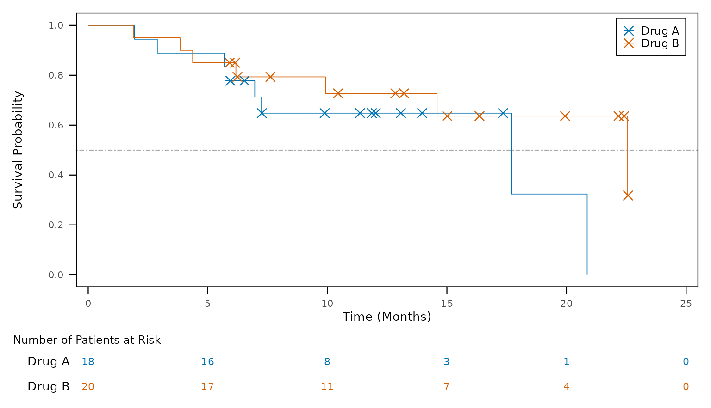

A figure is a design, kept as a YAML file: one
ordered list of steps from ADaM to what is drawn (the plot’s data, and
the objects made from it: a Kaplan-Meier fit, summary statistics …), the
figure-wide settings, and the layers drawn, in order.
tfl_fig_design_code() writes the ggplot2 script it stands
for. The script depends on dplyr and ggplot2 (and ggsurvfit / patchwork
where a layer needs them), not on tflspec: it is the program a study
keeps, to read and finish by hand. It is written in the style of a
study’s other programs: it has two sections,
# ---- data ---- (one |> pipe an object)
and # ---- plot ---- (the palette, then one +
chain into the figure).
library(tflspec)
adam <- tfl_example_adam() # simulated ADaM: ADSL, ADTTE, ADRS, ADLB ...Start from a template
tfl_fig_templates() lists the templates, each with its
clinical category and the data it reads:
tp <- tfl_fig_templates()
knitr::kable(head(tp[, c("template", "category", "data", "label")], 12))| template | category | data | label |
|---|---|---|---|
| km_risk_table | Efficacy: time to event | ADTTE | KM curves + number at risk |
| km_simple | Efficacy: time to event | ADTTE | KM curves |
| km_ci | Efficacy: time to event | ADTTE | KM curves + confidence bands + number at risk |
| km_single_arm | Efficacy: time to event | ADTTE | One KM curve + number at risk |
| waterfall_response | Efficacy: tumour response | ADTR + ADRS | Waterfall, bars by best response |
| waterfall_plain | Efficacy: tumour response | ADTR | Waterfall |
| swimmer_bar | Efficacy: tumour response | ADSL | Swimmer: bars + ongoing arrows |
| swimmer_response | Efficacy: tumour response | ADSL + ADRS | Swimmer: bars by best response + ongoing arrows |
| swimmer_assessment | Efficacy: tumour response | ADSL + ADRS | Swimmer: bars by best response + response at each assessment |
| swimmer_full | Efficacy: tumour response | ADSL + ADRS | Swimmer: bars, assessments, event markers, ongoing arrows |
| individual_spider | Efficacy: tumour response | ADTR + ADRS | Spider: % change in tumour size per subject, by best response |
| bar_rate_ci | Efficacy: subgroups and rates | ADRS + ADSL | Response rate by group with 95% CI |
design <- tfl_fig_template("km_risk_table", param = "OS", group = "TRT01P")
tfl_check_fig_design(design, adam) # 0 rows: the data has what it reads
#> [1] part field problem
#> <0 rows> (or 0-length row.names)The design as YAML
tfl_write_fig_design() writes one .yml a
figure; tfl_read_fig_design() reads it back. It reads top
to bottom as the figure is made:
yml <- tfl_write_fig_design(design, file.path(tempdir(), "F-14-2-1.yml"))
cat(readLines(yml), sep = "\n")
template: km_risk_table
data:
- step: read
dataset: ADTTE
- step: param
value: OS
- step: flag
variable: FASFL
- step: time_unit
variable: AVAL
unit: months
- step: survfit
name: fit
time: AVAL
censor: CNSR
by: TRT01P
plot:
x_label: Time (Months)
y_label: Survival Probability
colour_by: TRT01P
palette: treatment
legend: inside
x_min: 0.0
y_min: 0.0
y_max: 1.0
y_by: 0.2
dpi: 300.0
base_size: 10.0
theme: boxed
layers:
- layer: km_curve
linewidth: 0.3
- layer: censor_mark
shape: x
size: 3.0
stroke: 0.6
- layer: hline
yintercept: 0.5
linetype: twodash
colour: grey50
linewidth: 0.3
- layer: risk_table
title: Number of Patients at Risk
size: 3.0
height: 0.167-
datasteps:read,join,param,flag,filter,derive,time_unit,levels,rank; the steps that make an object of their own (name):survfit,summary,summary_by,rate,count,subset,ard_stats; andcode. A step after one of these changes that object, in its pipe (a design written before 0.0.24.9074, with astats:list, reads as the one list); -
layers: layers of the catalog (tfl_fig_parts()lists every piece and field), anygeomby name, acallto any function,layer_code; - raw R inside a value is the
!rtag (tfl_fig_r()in R).
The script
code <- tfl_fig_design_code(design, "F-14-2-1")
cat(code, sep = "\n")
# F-14-2-1: km_risk_table
# Generated by tflspec 0.0.24.9154 from the figure's design.
library(dplyr)
library(ggplot2)
library(ggsurvfit)
library(patchwork)
# the days in a week, a month, a year (the study's setup may set them)
if (!exists("days_per_month")) days_per_month <- 30.4375
# ---- data ------------------------------------------------------------------
# Input data frames: adtte
adtte_os <- adtte |>
filter(PARAMCD == "OS", FASFL == "Y") |>
# days -> months
mutate(AVAL = AVAL / days_per_month)
fit <- survfit2(Surv(AVAL, CNSR == 0) ~ TRT01P, data = adtte_os)
x_breaks <- pretty(c(0, max(fit$time)))
# the number at risk at the x axis's breaks, from the fit
sr <- summary(fit, times = x_breaks, extend = TRUE)
risk <- data.frame(
time = sr$time,
strata = sub("^[^=]*=", "", as.character(sr$strata)),
n_risk = sr$n.risk
) |>
mutate(strata = factor(strata, levels = rev(levels(factor(adtte_os$TRT01P)))))
# ---- plot ------------------------------------------------------------------
# the treatment palette, a colour for each TRT01P
lv <- levels(factor(adtte_os$TRT01P))
pal <- setNames(rep_len(c("#0072B2", "#D55E00", "#009E73", "#CC79A7", "#E69F00", "#56B4E9"), length(lv)), lv)
fig <- ggsurvfit(fit, linewidth = 0.3) +
add_censor_mark(shape = 4, size = 3, stroke = 0.6) +
geom_hline(yintercept = 0.5, linetype = "twodash", colour = "grey50",
linewidth = 0.3) +
scale_colour_manual(values = pal, breaks = names(pal)) +
scale_x_continuous(
breaks = x_breaks,
expand = expansion(mult = c(0.02, 0.02))
) +
scale_y_continuous(breaks = seq(0, 1, by = 0.2)) +
coord_cartesian(xlim = range(x_breaks), ylim = c(0, 1)) +
labs(x = "Time (Months)", y = "Survival Probability") +
theme_minimal(base_size = 10) +
theme(
axis.title = element_text(size = 10),
axis.text = element_text(size = 8),
legend.text = element_text(size = 9),
legend.key.size = unit(0.7, "lines"),
panel.border = element_rect(colour = "black", fill = NA, linewidth = 0.5),
panel.grid = element_blank(),
axis.ticks = element_line(linewidth = 0.4),
axis.ticks.length = unit(2, "mm")
) +
theme(
legend.position = "inside",
legend.position.inside = c(0.98, 0.98),
legend.justification = c(1, 1),
legend.background = element_rect(colour = "black", fill = "white", linewidth = 0.3),
legend.title = element_blank()
)
p_risk <- ggplot(risk, aes(x = time, y = strata, label = n_risk, colour = strata)) +
geom_text(size = 3) +
scale_colour_manual(values = pal, guide = "none") +
scale_x_continuous(
breaks = x_breaks,
expand = expansion(mult = c(0.02, 0.02))
) +
coord_cartesian(xlim = range(x_breaks), clip = "off") +
labs(title = "Number of Patients at Risk", x = NULL, y = NULL) +
theme_void(base_size = 10) +
theme(
plot.title = element_text(hjust = 0, size = rel(0.9)),
plot.title.position = "plot",
axis.text.y = element_text(hjust = 1, margin = margin(r = 5))
)
fig <- fig / p_risk + plot_layout(heights = c(0.833, 0.167))
fig
# ---- saving the figure -----------------------------------------------------
fig_path <- file.path("output", "F-14-2-1.png")
fig_width <- 7.5
fig_height <- 4.5
fig_dpi <- 300
fig_units <- "in"
dir.create(dirname(fig_path), showWarnings = FALSE, recursive = TRUE)
ggsave(
filename = fig_path,
plot = fig,
width = fig_width,
height = fig_height,
dpi = fig_dpi,
units = fig_units
)Run it where the datasets are (here, objects named as the datasets in lower case), and it draws and saves the figure:
env <- list2env(setNames(adam, tolower(names(adam))))
old <- setwd(tempdir())
eval(parse(text = code), envir = env)
setwd(old)
env$fig
In a study’s programs
Three arguments fit the script into a study’s other programs:
-
setup = TRUEtakes the palette from the study’s figure setup (tfl_colours(), see One look for the study below) instead of writing it in the script; -
save = FALSEleaves out the PNG: a report program places the figure itself; -
nameis what the figure is called ("plot", for a report program that hands it to rtfreporter).
code <- tfl_fig_design_code(design, "F-14-2-1", setup = TRUE, save = FALSE,
name = "plot")
cat(code[grep("tfl_colours|^plot <-|ggsave", code)], sep = "\n") # no ggsave()
pal <- tfl_colours("treatment", levels(factor(adtte_os$TRT01P)))
plot <- ggsurvfit(fit, linewidth = 0.3) +
plot <- plot / p_risk + plot_layout(heights = c(0.833, 0.167))When the design cannot say it
What a template’s fields cannot express is written in the design, not patched into the script afterwards:
- a
codestep: R that reworksdfor makes an object of its own; - a
layer_codelayer: R added to the plotp; -
plot.add: calls written after the figure’s settings (theme(),scale_*(),facet_*()); -
!rvalues:labels: !r scales::label_percent().
Written in the style of the script, with |>:
arms <- "df <- df |> mutate(TRT01P = factor(TRT01P, sort(unique(TRT01P))))"
cutoff <- paste('p <- p + annotate("text", x = 1, y = 0.05,',
'label = "Data cut-off: 01JUN2026", hjust = 0, size = 3)')
design$data <- append(design$data, list(list(step = "code", code = arms)),
after = 3) # after the read, param and flag steps
design$layers <- c(design$layers,
list(list(layer = "layer_code", code = cutoff)))
code <- tfl_fig_design_code(design, "F-14-2-1")
cat(code[grep("your code|TRT01P = factor|Data cut-off", code)], sep = "\n")
adtte_os <- adtte_os |> mutate(TRT01P = factor(TRT01P, sort(unique(TRT01P))))
p <- p + annotate("text", x = 1, y = 0.05, label = "Data cut-off: 01JUN2026", hjust = 0, size = 3)One look for the study
tfl_fig_style() holds every look-and-feel value of a
study’s figures (fonts, palettes, line widths, the legend); a study sets
its own with
options(tflspec.fig_style = tfl_read_fig_style(path)),
starting from tfl_fig_style_template().
tfl_fig_setup_code() writes the same values as a setup
script the figure programs source.
names(tfl_fig_style())
#> [1] "settings" "colors" "markers"A time on a figure’s axis is divided by a named constant, not by a
number in each program:
mutate(AVAL = AVAL / days_per_month), with
days_per_week, days_per_month and
days_per_year. The study’s setup sets them;
tfl_fig_setup_code() defines each one that is not defined
yet, with the values of tfl_time_unit_days().
tfl_time_unit_days()
#> days_per_week days_per_month days_per_year
#> 7.0000 30.4375 365.2500A forest plot from the figure’s own ARD
The forest_hr template draws hazard ratios that are
statistics of an ARD – one Cox model of all subjects and one within each
subgroup, made by cards / cardx – rather than fitting the models in the
figure program.
tfl_fig_template("forest_hr", subgroups = , comparison = )
gives the design, and attr(design, "analyses") the analyses
the ARD needs (tfl_fig_forest_analyses()), ready for the
ARD spec. Its text columns (N, the estimate and its interval) are a
panel at the right of the plot.
Composed figures and ggplot2 versions
A design may hold several plots (plots:) and a patchwork
layout (compose: {layout: km | box}).
ggplot2_version: "3.5" or "4.0" writes the
script for that version (tfl_fig_compat() lists the
differences), and tfl_fig_calls() lists the extension
functions a call layer may name.
The older figure spec
The sheet-based figure spec (tfl_fig_spec(),
tfl_fig_code()) and the quick figures
(tfl_fig_km(), tfl_fig_waterfall(), …,
tfl_fig_catalog()) remain while the development team
decides between the two (Discussion
#63); new work should use the design.